import pandas as pdProcess-Map Style Outputs (Directly Follows Graphs - DFGs)
Warning
This example has not yet been updated to reflect all of the new features and recommendations from vidigi 2.0.0, which have further simplified the process of adding vidigi to your model and accessing and modifying your animation.
For now, all of the code below will still work, but check out the getting started page for a full guide to the recommended way to use vidigi 2.0.0.
Packages like bupaR (for R) and pm4py (for Python) are designed for process mining on real-world process data.
However, there are a lot of useful visualisations that we can borrow from the process mining world and adapt for simulation, aiding in communicating processes with non-technical stakeholders, as well as verifying and debugging our model at various levels of granularity.
What do we mean by a process map? Well, it could be an output like this:

This gives us a quick overview of
- the number of entities that reach each stage (the numbers in the ‘nodes’ - the boxes)
- the number of people moving between each stage (the numbers on the ‘edges’ - the links)
- all of the possible pathways observed through the system
- the relative likeliness of each branch at each point (the thickness of the lines between the ‘edges’)
Vidigi allows for the creation of these types of outputs in three different ways: - static outputs using the Graphviz library - interactive outputs in jupyter notebooks using ipycytoscape - interactive outputs in streamlit web apps using streamlit-cytoscape
In this section, we’ll explore each of these.
We’ll start with a set of standard imports.
Example 1 - A simple linear pathway
from logger_model import Trial, g
NoteView Imported Code, which has had logging steps added at the appropriate points in the ‘model’ class
import random
import numpy as np
import pandas as pd
import simpy
from sim_tools.distributions import Exponential, Lognormal
from vidigi.logging import EventLogger
from vidigi.resources import VidigiStore
# Class to store global parameter values. We don't create an instance of this
# class - we just refer to the class blueprint itself to access the numbers
# inside.
class g:
"""
Create a scenario to parameterise the simulation model
Parameters:
-----------
random_number_set: int, optional (default=DEFAULT_RNG_SET)
Set to control the initial seeds of each stream of pseudo
random numbers used in the model.
n_cubicles: int
The number of treatment cubicles
trauma_treat_mean: float
Mean of the trauma cubicle treatment distribution (Lognormal)
trauma_treat_var: float
Variance of the trauma cubicle treatment distribution (Lognormal)
arrival_rate: float
Set the mean of the exponential distribution that is used to sample the
inter-arrival time of patients
sim_duration: int
The number of time units the simulation will run for
number_of_runs: int
The number of times the simulation will be run with different random number streams
"""
random_number_set = 42
n_cubicles = 4
trauma_treat_mean = 40
trauma_treat_var = 5
arrival_rate = 5
sim_duration = 600
number_of_runs = 100
# | code-fold: true
# | code-summary: "Show the patient class code"
class Patient:
"""
Class defining details for a patient entity
"""
def __init__(self, p_id):
"""
Constructor method
Params:
-----
identifier: int
a numeric identifier for the patient.
"""
self.id = p_id
self.arrival = -np.inf
self.wait_treat = -np.inf
self.total_time = -np.inf
self.treat_duration = -np.inf
# Class representing our model of the clinic.
class Model:
"""
Simulates the simplest minor treatment process for a patient
1. Arrive
2. Examined/treated by nurse when one available
3. Discharged
"""
# Constructor to set up the model for a run. We pass in a run number when
# we create a new model.
def __init__(self, run_number):
# Create a SimPy environment in which everything will live
self.env = simpy.Environment()
# Store the passed in run number
self.run_number = run_number
# By passing in the env we've created, the logger will default to the simulation
# time when populating the time column of our event logs
self.logger = EventLogger(env=self.env, run_number=self.run_number)
# Create a patient counter (which we'll use as a patient ID)
self.patient_counter = 0
# Create an empty list to hold our patients
self.patients = []
# Create our distributions
self.init_distributions()
# Create our resources
self.init_resources()
def init_distributions(self):
self.patient_inter_arrival_dist = Exponential(
mean=g.arrival_rate, random_seed=self.run_number * g.random_number_set
)
self.treat_dist = Lognormal(
mean=g.trauma_treat_mean,
stdev=g.trauma_treat_var,
random_seed=self.run_number * g.random_number_set,
)
def init_resources(self):
"""
Init the number of resources
Resource list:
1. Nurses/treatment bays (same thing in this model)
"""
self.treatment_cubicles = VidigiStore(
self.env, num_resources=g.n_cubicles, label="treatment_cubicle"
)
# A generator function that represents the DES generator for patient
# arrivals
def generator_patient_arrivals(self):
# We use an infinite loop here to keep doing this indefinitely whilst
# the simulation runs
while True:
# Increment the patient counter by 1 (this means our first patient
# will have an ID of 1)
self.patient_counter += 1
# Create a new patient - an instance of the Patient Class we
# defined above. Remember, we pass in the ID when creating a
# patient - so here we pass the patient counter to use as the ID.
p = Patient(self.patient_counter)
# Store patient in list for later easy access
self.patients.append(p)
# Tell SimPy to start up the attend_clinic generator function with
# this patient (the generator function that will model the
# patient's journey through the system)
self.env.process(self.attend_clinic(p))
# Randomly sample the time to the next patient arriving. Here, we
# sample from an exponential distribution (common for inter-arrival
# times), and pass in a lambda value of 1 / mean. The mean
# inter-arrival time is stored in the g class.
sampled_inter = self.patient_inter_arrival_dist.sample()
# Freeze this instance of this function in place until the
# inter-arrival time we sampled above has elapsed. Note - time in
# SimPy progresses in "Time Units", which can represent anything
# you like (just make sure you're consistent within the model)
yield self.env.timeout(sampled_inter)
# A generator function that represents the pathway for a patient going
# through the clinic.
# The patient object is passed in to the generator function so we can
# extract information from / record information to it
def attend_clinic(self, patient):
self.logger.log_arrival(entity_id=patient.id)
self.arrival = self.env.now
self.logger.log_queue(entity_id=patient.id, event="treatment_wait_begins")
with self.treatment_cubicles.request() as req:
# Seize a treatment resource when available
treatment_resource = yield req
self.logger.log_resource_use_start(
entity_id=patient.id,
event="treatment_begins",
resource_id=treatment_resource.id,
)
# sample treatment duration
self.treat_duration = self.treat_dist.sample()
yield self.env.timeout(self.treat_duration)
self.logger.log_resource_use_end(
entity_id=patient.id,
event="treatment_complete",
resource_id=treatment_resource.id,
)
# total time in system
self.total_time = self.env.now - self.arrival
self.logger.log_departure(entity_id=patient.id)
# The run method starts up the DES entity generators, runs the simulation,
# and in turns calls anything we need to generate results for the run
def run(self):
# Start up our DES entity generators that create new patients. We've
# only got one in this model, but we'd need to do this for each one if
# we had multiple generators.
self.env.process(self.generator_patient_arrivals())
# Run the model for the duration specified in g class
self.env.run(until=g.sim_duration)
class Trial:
def __init__(self):
self.all_event_logs = []
self.trial_results_df = pd.DataFrame()
self.run_trial()
# Method to run a trial
def run_trial(self):
print(f"{g.n_cubicles} nurses")
print() ## Print a blank line
# Run the simulation for the number of runs specified in g class.
# For each run, we create a new instance of the Model class and call its
# run method, which sets everything else in motion. Once the run has
# completed, we grab out the stored run results (just mean queuing time
# here) and store it against the run number in the trial results
# dataframe.
for run in range(1, g.number_of_runs + 1):
random.seed(run)
my_model = Model(run)
my_model.run()
self.all_event_logs.append(my_model.logger)
self.trial_results = pd.concat(
[run_results.to_dataframe() for run_results in self.all_event_logs]
)my_trial = Trial()
my_trial.run_trial()4 nurses
4 nurses
Because of how this model has been set up, we have an attribute containing a list of EventLogger objects. We’ll pull back the first one, representing the first run.
single_run = my_trial.all_event_logs[0]
single_run<vidigi.logging.EventLogger at 0x7f7aa89c8050>single_run.generate_dfg()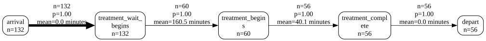
generate_dfg also takes a warm_up= parameter, for discarding an initial period before the graph is built - useful for the same reason it’s useful anywhere else in vidigi, but with a caveat specific to process maps: this is a plain time-based filter on individual rows, not the presence-aware trimming reshape_for_animations/animate_activity_log use (see feat_animation_warm_up.ipynb for that one). A case that falls entirely inside the warm-up is dropped completely, and a case that spans the cutoff loses the single edge connecting its last pre-cutoff event to its first post-cutoff one, since one side of that pair is no longer in the log - both deliberate, since discover_dfg builds each case’s edges from its own consecutive rows, so dropping early rows can’t make a case silently vanish from output it should still appear in the way the animation functions’ own naive-filtering trap can. Below, the same run’s arrival count drops from 132 to 113 once the first 100 time units are excluded - the 19 patients who arrived, and in most cases departed, before the cutoff:
single_run.generate_dfg(warm_up=100)
We can generate a different type of graph, passing in any arguments accepted by the relevant function.
The accepted arguments can be found in the following places:
single_run.generate_dfg(output_format="cytoscape-jupyter", spacing_factor=2)Sim-focussed node metrics: queue build-up and resource load
The node counts so far are process mining’s native currency - how many entities passed through each step. A simulation can tell us something process mining usually can’t: how many entities were sitting at each step at any given moment. Passing occupancy_metrics=True adds, to every queue and resource node, the mean, minimum and maximum number of entities present - queue length for queue steps, units in use for resource_use steps.
It’s off by default because the queue figures are reconstructed the same way animate_activity_log rebuilds each frame (via reshape_for_animations), which is slow on a long log. occupancy_snapshot_interval= trades resolution for speed, and any warm_up= is applied to these figures too.
single_run.generate_dfg(occupancy_metrics=True)/home/runner/work/vidigi/vidigi/src/vidigi/analysis.py:2165: UserWarning: 4 resource_use row(s) were still open at the end of the window - censored at 597 (unclosed='censor', the default). Pass unclosed='drop' to exclude them instead.
intervals = resource_use_intervals(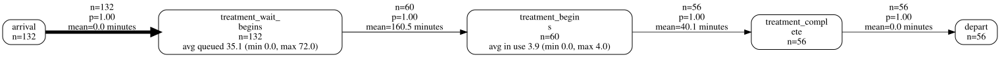
The same figures are available as a plain table via vidigi.analysis.activity_occupancy_stats - for a report, or for merging onto a hand-built DFG with discover_dfg(occupancy_stats=...). across_runs= chooses how a multi-run log is combined: "average" (the figure expected per replication) or "pool" (pooled across every run and snapshot, so the maximum is the worst seen in any run).
from vidigi.analysis import activity_occupancy_stats
activity_occupancy_stats(single_run.to_dataframe())/home/runner/work/vidigi/vidigi/src/vidigi/analysis.py:2165: UserWarning: 4 resource_use row(s) were still open at the end of the window - censored at 597 (unclosed='censor', the default). Pass unclosed='drop' to exclude them instead.
intervals = resource_use_intervals(| event | kind | mean_occupancy | min_occupancy | max_occupancy | median_occupancy | |
|---|---|---|---|---|---|---|
| 0 | treatment_wait_begins | queue | 35.093645 | 0.0 | 72.0 | 36.0 |
| 1 | treatment_begins | resource | 3.871237 | 0.0 | 4.0 | 4.0 |
From a TrialLogger
Everything above was one run. A TrialLogger - vidigi’s container for a whole trial - has its own generate_dfg() with three ways to handle the several replications it holds:
- the default is the representative run: the replication whose mean time in system is closest to the trial median
run_number=Nrenders one named replicationacross_runs=Truebuilds one combined cross-run map - transitions grouped per(run, entity)so no edge is fabricated across the seam between runs, node and edge counts shown per replication with the between-run range (n=3.5 (1–7)), and transition times pooled over every run
from vidigi.logging import TrialLogger
trial_logs = TrialLogger(my_trial.all_event_logs)
# the representative run - closest to the trial's median time in system
trial_logs.generate_dfg(warm_up=100)
A single named replication:
trial_logs.generate_dfg(run_number=7, warm_up=100)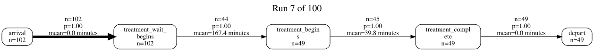
across_runs=True combines every replication into a single map. The counts become per-run means (with the range across runs), and the title carries a reminder that this is aggregated simulation output rather than one observed run. Passing warm_up= matters here - without it the start-up transient is baked into a stakeholder-facing figure, so vidigi warns.
trial_logs.generate_dfg(across_runs=True, warm_up=100)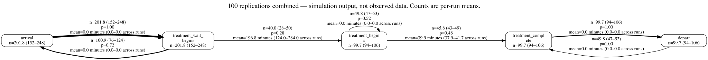
Note
The cross-run map is a summary, not a run of your model. A few things to keep in mind:
- entities still in the system when a run ends have truncated paths, which biases transition times downwards
- the cytoscape renderers hide any edge seen less than
min_frequencytimes per run on average (default 1) get_event_duration_ciis the route to a formal confidence interval on a transition time, rather than the plain min–max range shown on the graph
Example 2 - A simple linear pathway - Without EventLogger, or for fine control over the DFG functions
First, we will need some extra imports.
from vidigi.process_mapping import (
add_sim_timestamp,
dfg_to_cytoscape,
dfg_to_graphviz,
discover_dfg,
)First, let’s read in an event log. This is a standard vidigi event log created with the EventLogger class, with the dataframe saved as a csv for easy portability.
event_log = pd.read_csv("sample_event_log_10_day_10_run.csv")IMPORTANT - the individual DFG functions (discover_dfg and friends) build transitions per entity without regard to which run a row belongs to. Handed an unfiltered multi-run log they fabricate edges across the seam between runs - because entity IDs are reused, an entity that departs in one run looks like it jumps straight back to an early stage in the next - and vidigi now warns when this happens.
For an EventLogger or TrialLogger, generate_dfg() (above) handles this for you. Using the functions directly, either filter to one run first (below), or pass run_col_name="run" to discover_dfg so it groups transitions by run.
event_log_single = event_log[event_log["run"] == 1]
event_log_single.head()| entity_id | pathway | event_type | event | time | resource_id | run | |
|---|---|---|---|---|---|---|---|
| 9969 | 1 | Simplest | arrival_departure | arrival | 0.000000 | NaN | 1 |
| 9970 | 1 | Simplest | queue | treatment_wait_begins | 0.000000 | NaN | 1 |
| 9971 | 1 | Simplest | resource_use | treatment_begins | 0.000000 | 1.0 | 1 |
| 9972 | 2 | Simplest | arrival_departure | arrival | 12.021043 | NaN | 1 |
| 9973 | 2 | Simplest | queue | treatment_wait_begins | 12.021043 | NaN | 1 |
Note
Note that we could also do this for any situation where we want fine-grained control over the use of the individual DFG-creation functions, even if we have used EventLogger.
In that case, we’d just get the event log in a pandas dataframe format using event_log = my_event_logger_object.to_dataframe()
The EventLogger object will already only contain a single run. If you are using TrialLogger, trial_logs.generate_dfg(...) (shown earlier) is usually easier; to drive the functions directly, filter to a single run or pass run_col_name= as mentioned above.
Before we can pass this to our DFG functions, we need to add a timestamp column.
This is because the functions are designed to work regardless of the unit of time you’ve used for your simulation - but it’s a lot easier if we encode that at the beginning of the process, and allows the dfg to calculate various summary statistics.
The defaults for column names reflect vidigi’s EventLogger default, so if we’ve used EventLogger, we won’t need to specify column names here.
If we have a simulation where we don’t really have a date in mind - for example, a simulation that shows no seasonality across the year - then we can leave the sim_start parameter blank, and it will choose a dummy date of 12am on the 1st January, 2000. This won’t be displayed anywhere in the later visualisations, so you don’t have to worry too much about it!
df_timestamp = add_sim_timestamp(event_log_single, time_unit="minutes")
df_timestamp.head()| entity_id | pathway | event_type | event | time | resource_id | run | timestamp | |
|---|---|---|---|---|---|---|---|---|
| 9969 | 1 | Simplest | arrival_departure | arrival | 0.000000 | NaN | 1 | 2000-01-01 00:00:00.000000000 |
| 9970 | 1 | Simplest | queue | treatment_wait_begins | 0.000000 | NaN | 1 | 2000-01-01 00:00:00.000000000 |
| 9971 | 1 | Simplest | resource_use | treatment_begins | 0.000000 | 1.0 | 1 | 2000-01-01 00:00:00.000000000 |
| 9972 | 2 | Simplest | arrival_departure | arrival | 12.021043 | NaN | 1 | 2000-01-01 00:12:01.262581188 |
| 9973 | 2 | Simplest | queue | treatment_wait_begins | 12.021043 | NaN | 1 | 2000-01-01 00:12:01.262581188 |
Now we can use the discover_dfg function to turn the event log into the format required by the various static and interactive visualisation functions.
nodes, edges = discover_dfg(df_timestamp)Let’s explore what our nodes look like.
nodes| activity | count | |
|---|---|---|
| 0 | arrival | 2855 |
| 1 | depart | 1441 |
| 2 | treatment_begins | 1445 |
| 3 | treatment_complete | 1441 |
| 4 | treatment_wait_begins | 2855 |
The edges dataframe then calculates the frequency of various transitions between nodes, the probability of each - here 1.0 as there are no branching steps - and various time-based metrics for each transition.
edges| source | target | frequency | mean_time | median_time | max_time | min_time | standard_deviation_time | probability | |
|---|---|---|---|---|---|---|---|---|---|
| 0 | arrival | treatment_wait_begins | 2855 | 0.000000 | 0.000000 | 0.000000 | 0.000000 | 0.000000 | 1.0 |
| 1 | treatment_begins | treatment_complete | 1441 | 39.887907 | 39.709881 | 58.965050 | 25.199957 | 4.957233 | 1.0 |
| 2 | treatment_complete | depart | 1441 | 0.000000 | 0.000000 | 0.000000 | 0.000000 | 0.000000 | 1.0 |
| 3 | treatment_wait_begins | treatment_begins | 1445 | 3567.342893 | 3512.794222 | 7102.475786 | 0.000000 | 2040.848449 | 1.0 |
Finally, we can display the output.
dfg_to_graphviz(
nodes,
edges,
)
By default, it will display the mean time between steps. We could instead ask for the median:
dfg_to_graphviz(nodes, edges, time_metric="median")
dfg_to_graphviz(nodes, edges, time_metric="standard_deviation")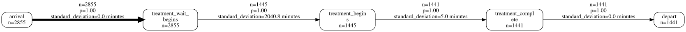
dfg_to_graphviz(nodes, edges, time_metric="max")
dfg_to_graphviz(nodes, edges, time_metric="min")
A more complex example - stroke dataset - without EventLogger
Again, make sure we’ve imported the relevant functions.
from vidigi.process_mapping import add_sim_timestamp, dfg_to_graphviz, discover_dfgLet’s do the same for a more complex example - a stroke ward with multiple branching pathways and patient types.
stroke_df = pd.read_csv("event_log_stroke.csv")
stroke_df.head()| Unnamed: 0 | id | patient_diagnosis_type | thrombolysis | admission_avoidance | advanced_ct_pathway | arrived_ooh | event | time | event_type | resource_id | |
|---|---|---|---|---|---|---|---|---|---|---|---|
| 0 | 0 | 1 | I | True | False | True | True | clock_start | 0.000000 | arrival_departure | NaN |
| 1 | 1 | 2 | I | True | False | True | True | clock_start | 415.319713 | arrival_departure | NaN |
| 2 | 2 | 3 | TIA | False | True | True | False | clock_start | 480.000000 | arrival_departure | NaN |
| 3 | 3 | 4 | I | True | False | True | False | clock_start | 481.157251 | arrival_departure | NaN |
| 4 | 4 | 5 | I | True | False | True | False | clock_start | 898.765362 | arrival_departure | NaN |
Note
Again, note that we could also do this for any situations where we want fine-grained control over the use of the individual DFG-creation functions, event if we have used EventLogger.
In that case, we’d just get the event log in a pandas dataframe format using event_log = my_event_logger_object.to_dataframe()
The EventLogger object will already only contain a single run. If you are using TrialLogger, make sure you filter to a single run, as mentioned above.
Let’s tidy it up a bit!
The event names use underscores, which won’t wrap onto new lines, so we’ll replace those with spaces. We can also remove _time everywhere it appears, as in this case it’s not adding anything useful.
stroke_df["event"] = stroke_df["event"].apply(
lambda x: x.replace("_time", "").replace("_", " ")
)Again, we’ll add our timestamp, then get our nodes and edges.
stroke_df_timestamp = add_sim_timestamp(stroke_df)
nodes, edges = discover_dfg(stroke_df_timestamp, case_col="id")
nodes| activity | count | |
|---|---|---|
| 0 | clock start | 3490 |
| 1 | ct or ctp scan end | 3490 |
| 2 | ct or ctp scan start | 3490 |
| 3 | exit | 3490 |
| 4 | nurse q start | 3490 |
| 5 | nurse triage end | 3490 |
| 6 | nurse triage start | 3490 |
| 7 | sdec admit | 1556 |
| 8 | sdec discharge | 1556 |
| 9 | ward admit | 2121 |
| 10 | ward discharge | 2072 |
| 11 | ward q start | 2121 |
edges| source | target | frequency | mean_time | median_time | max_time | min_time | standard_deviation_time | probability | |
|---|---|---|---|---|---|---|---|---|---|
| 0 | clock start | nurse q start | 3490 | 0.000000 | 0.000000 | 0.000000 | 0.000000 | 0.000000 | 1.000000 |
| 1 | ct or ctp scan end | exit | 566 | 0.000000 | 0.000000 | 0.000000 | 0.000000 | 0.000000 | 0.162178 |
| 2 | ct or ctp scan end | sdec admit | 1556 | 0.104592 | 0.000000 | 79.141723 | 0.000000 | 2.734817 | 0.445845 |
| 3 | ct or ctp scan end | ward q start | 1368 | 0.000000 | 0.000000 | 0.000000 | 0.000000 | 0.000000 | 0.391977 |
| 4 | ct or ctp scan start | ct or ctp scan end | 3490 | 19.622976 | 13.640368 | 213.116992 | 0.009150 | 19.991279 | 1.000000 |
| 5 | nurse q start | nurse triage start | 3490 | 1.315213 | 0.000000 | 212.852738 | 0.000000 | 10.424784 | 1.000000 |
| 6 | nurse triage end | ct or ctp scan start | 3490 | 0.000000 | 0.000000 | 0.000000 | 0.000000 | 0.000000 | 1.000000 |
| 7 | nurse triage start | nurse triage end | 3490 | 58.501266 | 41.104481 | 430.000987 | 0.017171 | 58.650424 | 1.000000 |
| 8 | sdec admit | sdec discharge | 1556 | 240.563909 | 157.352706 | 2483.017874 | 0.208562 | 252.735487 | 1.000000 |
| 9 | sdec discharge | exit | 803 | 0.000000 | 0.000000 | 0.000000 | 0.000000 | 0.000000 | 0.516067 |
| 10 | sdec discharge | ward q start | 753 | 0.000000 | 0.000000 | 0.000000 | 0.000000 | 0.000000 | 0.483933 |
| 11 | ward admit | exit | 49 | 0.000000 | 0.000000 | 0.000000 | 0.000000 | 0.000000 | 0.023102 |
| 12 | ward admit | ward discharge | 2072 | 11710.233559 | 5506.178163 | 206746.048227 | 0.955778 | 18112.653183 | 0.976898 |
| 13 | ward discharge | exit | 2072 | 0.000000 | 0.000000 | 0.000000 | 0.000000 | 0.000000 | 1.000000 |
| 14 | ward q start | ward admit | 2121 | 0.230419 | 0.000000 | 291.176214 | 0.000000 | 7.122200 | 1.000000 |
Let’s see what this looks like.
We’ll also make use of a couple of extra parameters, filtering out any very infrequent paths.
g = dfg_to_graphviz(nodes, edges, min_frequency=5)
g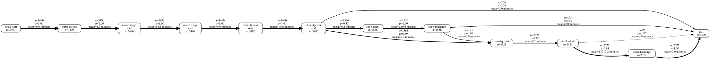
Let’s take a quick look at what our output actually is.
type(g)graphviz.graphs.DigraphIt’s a graphviz Digraph object, which we could continue to modify if we wanted to.
with g.subgraph(name="cluster_0") as c:
c.attr(color="blue")
c.node_attr["style"] = "filled"
# Note that we will need to include the newline indicator when filtering; we can work out where this is by visually observing
# the node labels in the orignal diagram
c.edges(
[
("clock start", "nurse q start"),
("nurse q start", "nurse triage\nstart"),
("nurse triage\nstart", "nurse triage\nend"),
]
)
c.attr(label="Arrival and Triage")
g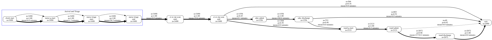
We can also output to an image type - but note it will output as a series of bytes that will need to be converted into an image in some other way depending on your intended use.
g_png = dfg_to_graphviz(nodes, edges, min_frequency=5, return_image=True, format="png")
type(g_png)bytesfrom IPython.display import Image
Image(g_png)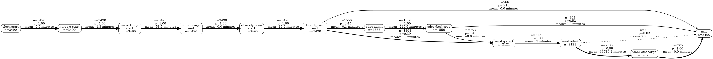
We can also change the orientation of the output.
dfg_to_graphviz(nodes, edges, min_frequency=5, direction="TD")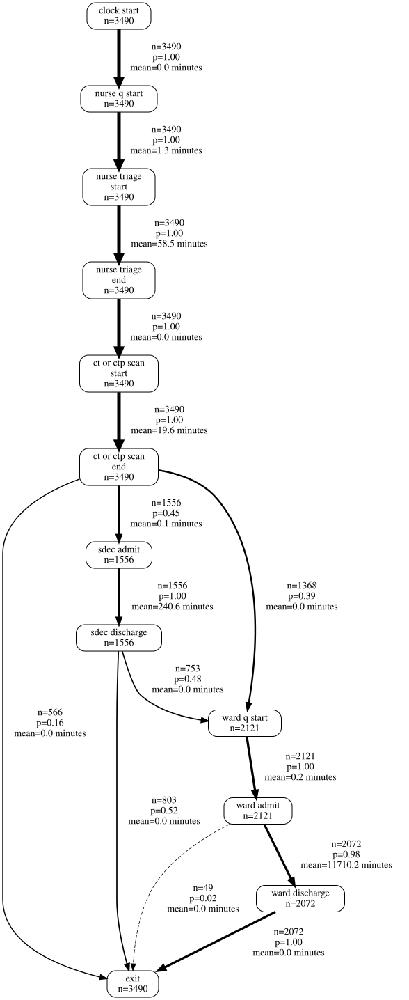
While the early parts of the process are easy to interpret in minutes, it’s hard to interpret the ward stay durations, which are much longer.
We might actually want to split these into two separate graphs by filtering the node and edges table.
For now, though, we’re going to rediscover our dfg using a unit of days, recalculate our timestamp and node/edge dataframes, and visualise this again. Note where ‘minutes’ has changed to ‘days’.
nodes, edges = discover_dfg(stroke_df_timestamp, case_col="id", time_unit="days")
dfg_to_graphviz(
nodes,
edges,
min_frequency=5,
time_unit="days",
)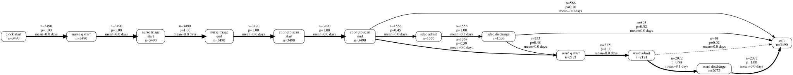
Looping through graphviz outputs
While a lot of value can be obtained from just checking that your model is behaving as expected, you can get even more out of these outputs by faceting by different elements.
For example, here we expect patients with different stroke types to have different lengths of stay.
We need to import the display function from IPython.display and explicitly call this to ensure it’s included.
from IPython.display import display
for i in stroke_df_timestamp["patient_diagnosis_type"].unique():
df = stroke_df_timestamp[stroke_df_timestamp["patient_diagnosis_type"] == i]
nodes, edges = discover_dfg(df, case_col="id", time_unit="days")
display(dfg_to_graphviz(nodes, edges, time_unit="days", title=f"Stroke Type: {i}"))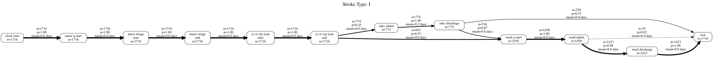
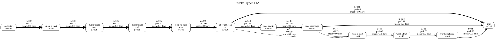
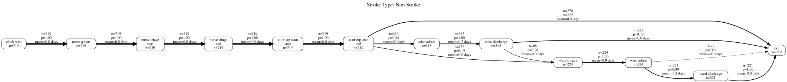
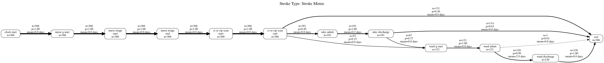
We could do what we talked about earlier and try filtering the nodes and edges.
from IPython.display import display
for i in stroke_df_timestamp["patient_diagnosis_type"].unique():
df = stroke_df_timestamp[stroke_df_timestamp["patient_diagnosis_type"] == i]
nodes, edges = discover_dfg(df, case_col="id", time_unit="days")
# Remember that we will need to include the newline indicator when filtering; we can work out where this is by visually observing
# the node labels in the orignal diagram
steps_to_include = [
"ct or ctp scan\nend",
"sdec admit",
"sdec discharge",
"ward q start",
"ward admit",
"ward discharge",
"exit",
]
nodes = nodes[nodes["activity"].isin(steps_to_include)]
edges = edges[
(edges["source"].isin(steps_to_include))
| (edges["target"].isin(steps_to_include))
]
display(dfg_to_graphviz(nodes, edges, time_unit="days", title=f"Stroke Type: {i}"))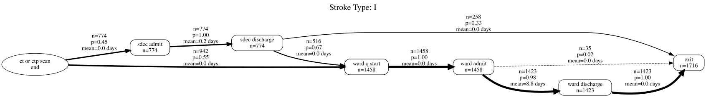
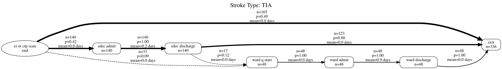
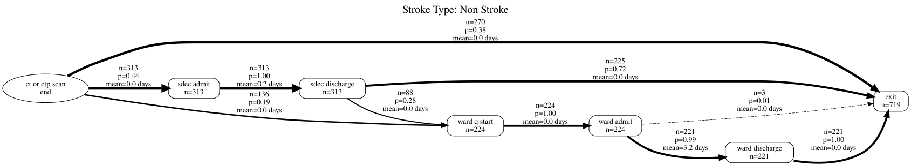
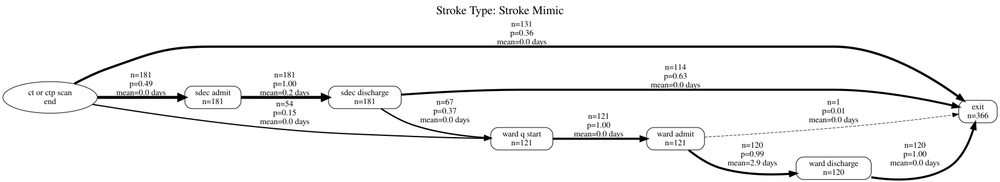
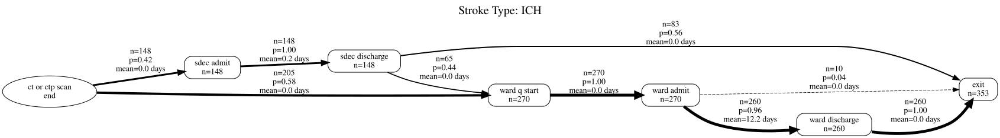
We could check out the maximum durations too.
for i in stroke_df_timestamp["patient_diagnosis_type"].unique():
df = stroke_df_timestamp[stroke_df_timestamp["patient_diagnosis_type"] == i]
nodes, edges = discover_dfg(df, case_col="id", time_unit="days")
display(
dfg_to_graphviz(
nodes, edges, time_unit="days", title=f"Stroke Type: {i}", time_metric="max"
)
)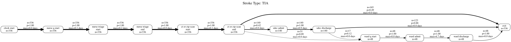
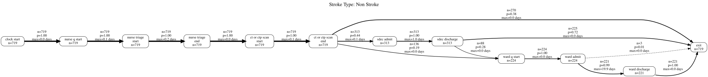
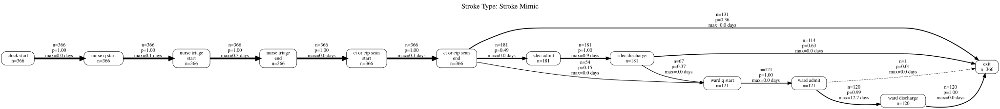
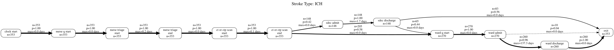
Interactive outputs
Finally, let’s take a look at an interactive output.
Here, we pass in the same nodes and edges. However, we need to choose a layout; ‘dagre’ is often the best option for getting something that looks similar to graphviz.
nodes, edges = discover_dfg(
stroke_df_timestamp, case_col="id", timestamp_col="timestamp", time_unit="days"
)
op = dfg_to_cytoscape(
nodes,
edges,
layout_name="dagre",
layout_orientation="LR",
spacing_factor=1.5,
width=1400,
time_unit="days",
)
display(op)You can also try this out in the following Streamlit app.